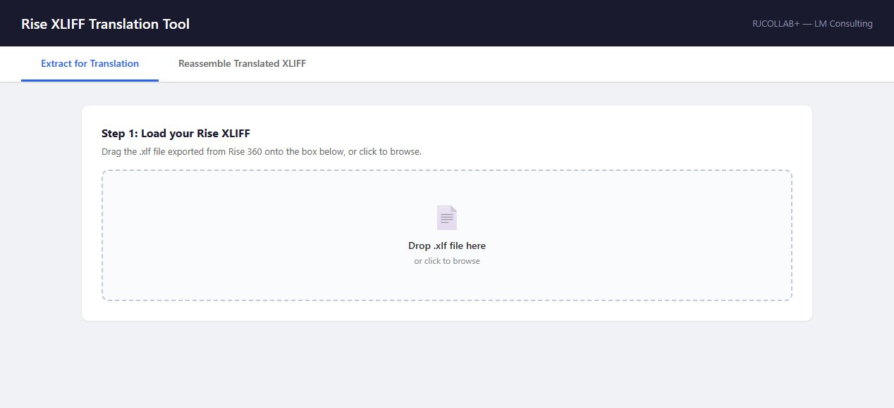
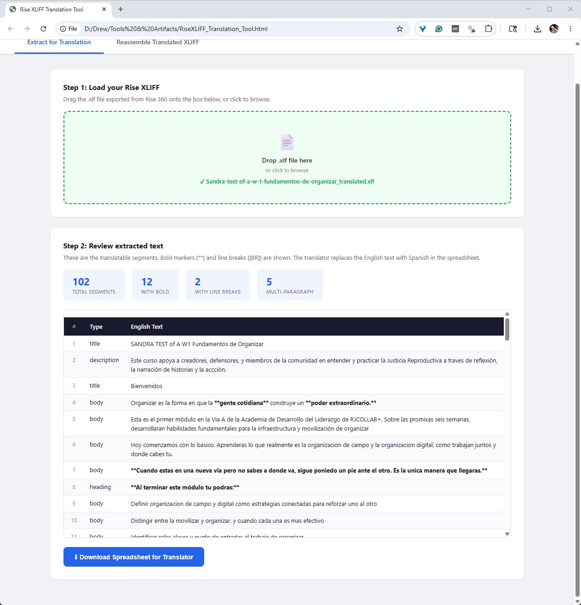
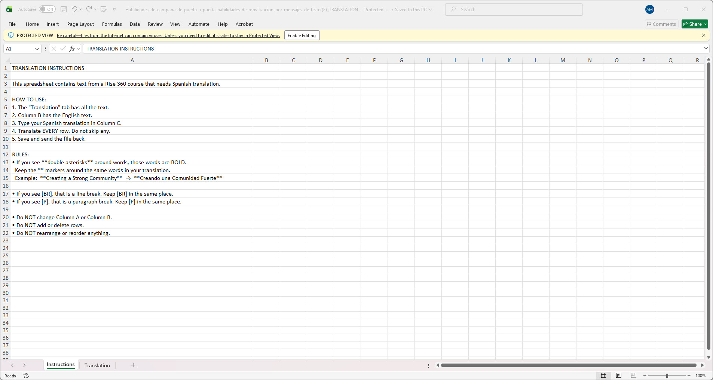
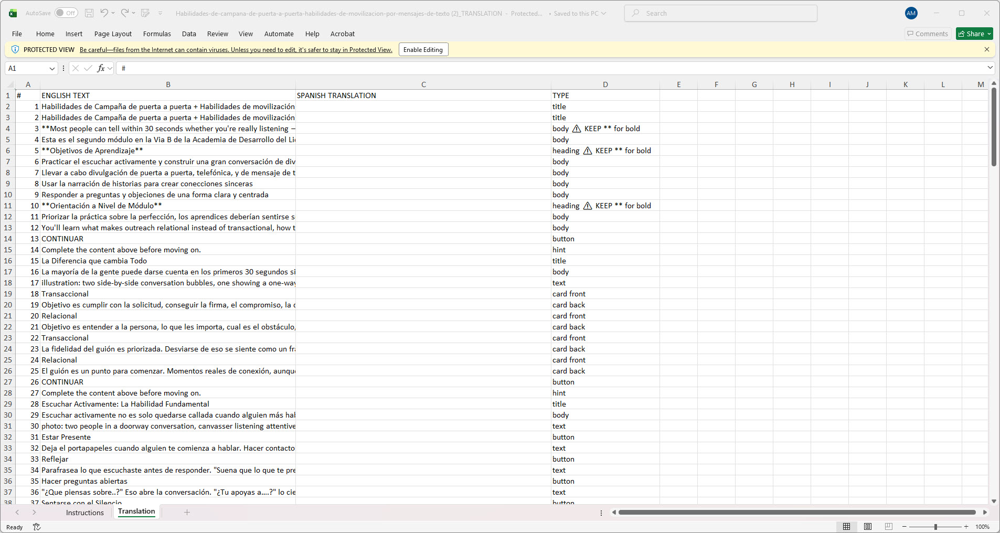
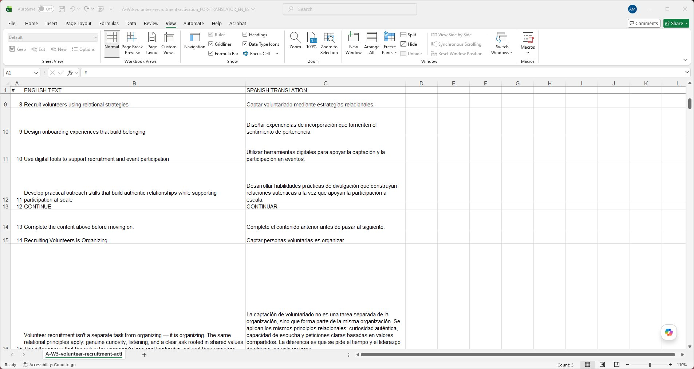
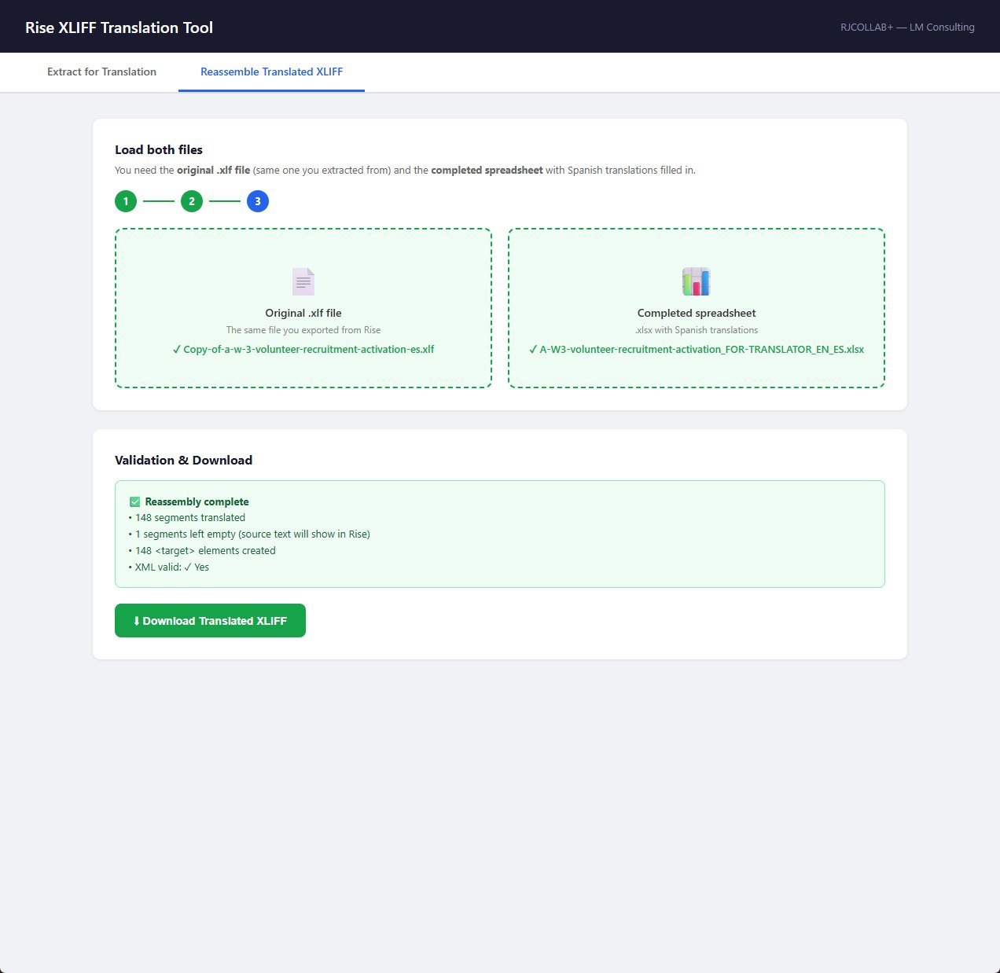
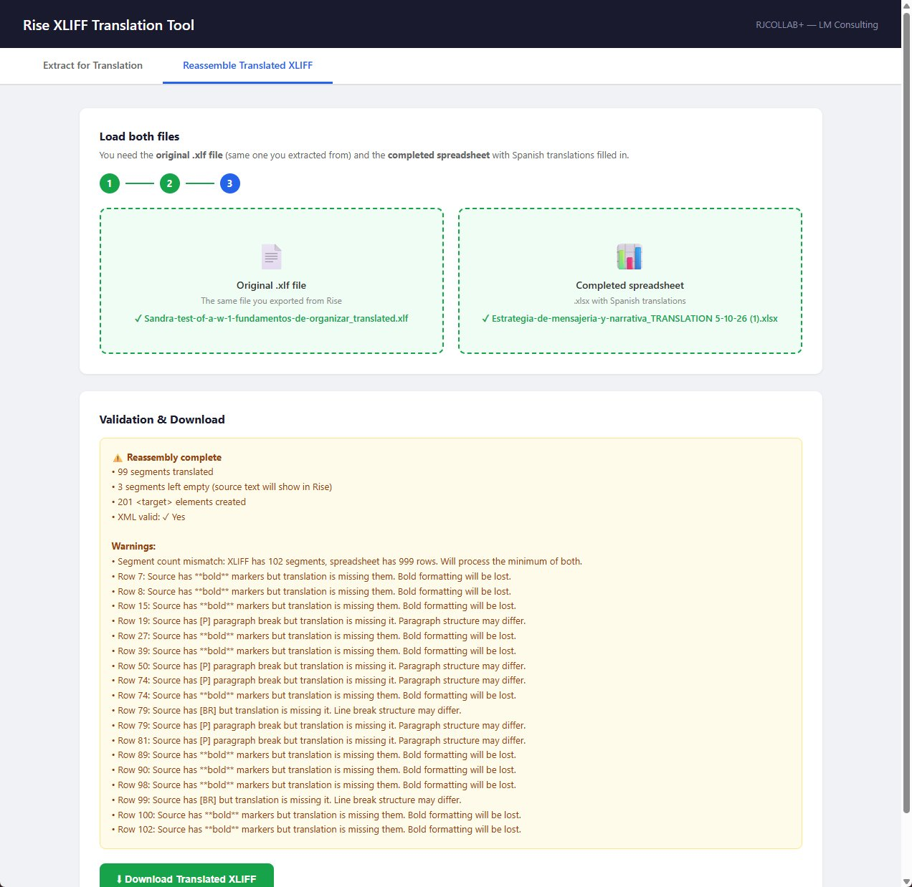

01
In Rise
Course developer
Click Settings (upper right) on your Rise course. Open the Translations tab. Make sure Keep HTML formatting is checked. Export the course as XLIFF. You get a .xlf file.
Translation is for humans, not machines.
A browser-based tool that lets machines do what they do well — parse Articulate Rise 360's XLIFF, reformat structure, validate the result — so translators can do what humans have done since the Rosetta Stone: read meaning, write meaning, in the language they speak.

Articulate Rise 360 has a paid translation service — and an XLIFF export for everyone who doesn't pay for it. The export is technically a standard XLIFF file. In practice, it's structured in a way that makes life hard for almost everyone who tries to use it.
Within each segment, Rise wraps paragraph and inline content in <g> tags. CAT tools — Trados, memoQ, MateCat, Phrase — read every <g> tag as inline formatting that must be preserved verbatim. But Rise uses them for two different things at once: paragraph structure (which a translator shouldn't have to think about) and inline emphasis (which they should). Translators get walls of tagged text without an easy way to tell what's safe to ignore.
The downstream symptoms show up across Articulate's own community forums: silent import failures where the course re-imports successfully but stays in the original language, dropped paragraph structure, formatting drift. Articulate's own support staff has noted publicly that manual translation of the raw XLIFF is the most common cause of failed re-imports.
The practical effect: small teams without a CAT-tool licensing budget end up either paying Articulate's translation service, paying a vendor who specializes in XLIFF, or just not translating their course.
This tool inverts the workflow. The machine parses the XLIFF and rebuilds it. The human translates. The translator never sees XML.
Three markers do all the formatting work: **bold**, [BR] for line break, [P] for paragraph break. The translator preserves them around their translated words. That's the entire learning curve.
It's a small idea with a clear consequence: anyone who can work in a spreadsheet can now translate a Rise course. The pool of possible translators expands from "can work with XLIFF" to "can work with a spreadsheet."
Click Settings (upper right) on your Rise course. Open the Translations tab. Make sure Keep HTML formatting is checked. Export the course as XLIFF. You get a .xlf file.
Open the tool in any browser. Click the file area to add your .xlf. The tool parses it, shows every translatable segment with its content type (title, heading, body, button, hint, card front, card back), counts the formatting that needs preserving, and offers a download of the translator-ready spreadsheet.

Open the spreadsheet. The first tab is the Instructions sheet — plain-language rules written for the translator. The second tab is the work itself:
| Col | Contents |
|---|---|
| A | Row number |
| B | English text, with ** around bold words and [BR] / [P] for breaks |
| C | Empty cell for the translation |
| D | Type label and notes (e.g. heading ⚠️ KEEP ** for bold, card back ⚠️ KEEP [P]) |
Translate in Column C. Don't worry about XLIFF. Don't worry about tags. Keep the **, [BR], and [P] markers around the equivalent translated words. That's the whole job.



Click to add the original .xlf and the completed spreadsheet (XLSX or CSV). The tool rebuilds the XLIFF with translated targets, validates the result, and offers a translated .xlf you re-import to Rise.

— It's that easy.
The reassemble step doesn't just rebuild the XLIFF. It inspects what came back. If a row is missing, if a cell was left untranslated, if a ** or [P] or [BR] marker was dropped — the tool flags the exact row before you download anything.
It works in both directions. Course developers use it to catch problems before re-importing to Rise. Translators use it on their own work as a pre-submit check: nothing missing, nothing broken, before sending the file back to the client.

If your translator already lives in Trados, memoQ, Phrase, or another CAT tool, the spreadsheet works the same way. Save it as CSV, import to the CAT tool, translate with their translation memory and glossary intact, export back to CSV (or XLSX) for the reassembly step.
The result: the translator keeps their workflow, their TM, and their QA — but they're not fighting Rise's <g>-tag structure to get there. Bold reduces to **. Paragraph breaks reduce to [P]. The tags they have to preserve are minimal and obvious.
From "can work with XLIFF"
to "can work with a spreadsheet."
Every row is tagged: title, heading, body, button, hint, card front, card back, prompt. Translators get context.
Bold wrapped in **. Line breaks as [BR]. Paragraph breaks as [P]. Plain text, easy to preserve.
The downloaded spreadsheet has an Instructions sheet. Translators don't need a separate brief.
Column D notes the rows that contain bold or paragraph breaks, with a ⚠️ KEEP reminder where it matters.
Missing **, [BR], or [P] are flagged by row number on reassembly.
If the row count doesn't match between the XLIFF and the spreadsheet, the tool tells you exactly where.
The final XLIFF is parsed to confirm it's well-formed before download.
Segment counts, bold counts, structural complexity. Useful for scoping and quoting a job.
Spreadsheet output works with Trados, memoQ, Phrase, MateCat — anything that reads CSV or XLSX.
No server, no upload, no account. Course content stays on your machine. No install.
Built for the case where the right translator isn't the one with the CAT tool — it's the one who knows the domain. NGOs and non-profits with bilingual subject-matter experts on staff. Health programs whose community workers speak both languages and know the material cold. Faith-based organizations, legal aid groups, advocacy networks — anywhere that knowing the field matters more than owning translation software.
This tool lets a Rise course developer choose a translator by domain expertise instead of by software stack.
Download the single-file HTML. Open it in a browser. Start translating.
Download the toolAccess is gated by a one-time password. Contact for purchase and password details.